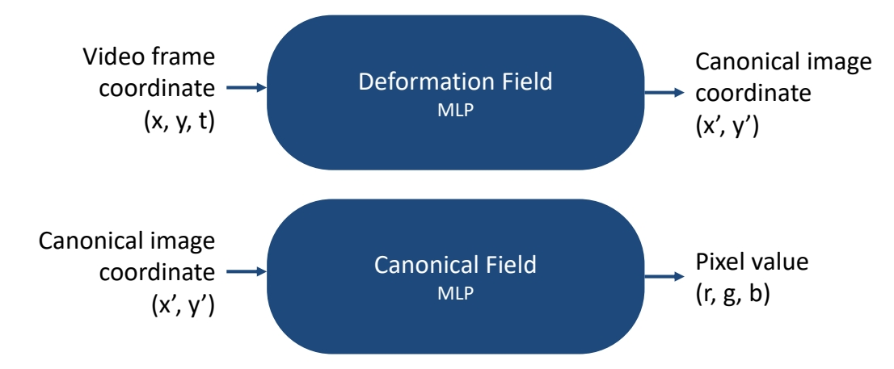

P242
3 Video Editing
3.4 3D-Aware
P243

P244
Layered Neural Atlases
Decompose a video into two images
- Decompose a video into a foreground image + a background image

Kasten et al., “Layered Neural Atlases for Consistent Video Editing,” arXiv 2023.
✅ 对背景进行编辑（图片编辑、风格迁移）再传播到不同帧上去。
P245
Layered Neural Atlases
Decompose a video into two images
- Decompose a video into a foreground image + a background image
- Edit the foreground/background image = edit the video

Kasten et al., “Layered Neural Atlases for Consistent Video Editing,” arXiv 2023.
P246
VidEdit
Atlas-based video editing
- Decompose a video into a foreground image + a background image
- Edit the foreground/background image = edit the video
- Use diffusion to edit foreground/background atlas

Video from Kasten et al., “Layered Neural Atlases for Consistent Video Edigng,” arXiv 2023.
Couairon et al., “VidEdit: Zero-Shot and Spagally Aware Text-Driven Video Edigng,” arXiv 2023.
✅ 前景编辑：(1) 抠出第一帧前景并进行编辑得到 Partial Atlas.
✅ (2) Partial Atlas 作为下一帧的 condition 整体上是自回归的。
✅ 所有 Partial 合起来得到一个整体。
✅ 背景使用深度信息作为 cordition.
P247
StableVideo & Shape-aware Text-drive Layered Video Editing
Atlas-based video edieng

Lee et al., “Shape-aware Text-driven Layered Video Editing,” CVPR 2023.
Chai et al., “StableVideo: Text-driven Consistency-aware Diffusion Video Editing,” ICCV 2023.
P248
StableVideo
Atlas-based video editing
Chai et al., “StableVideo: Text-driven Consistency-aware Diffusion Video Edigng,” ICCV 2023.
✅ 给一个场景的多视角图片，基于 MLP 学习 3D 场景的隐式表达。
P249
Content Deformation Field (CoDeF)
Edit a video = edit a canonical image + learned deformaeon field
-
Limitations of Neural Layered Atlases
- Limited capacity for faithfully reconstructing intricate video details, missing subtle motion features like blinking eyes and slight smiles
- Distorted nature of the estimated atlas leads to impaired semantic information
-
Content Deformation Field: inspired by dynamic NeRF works, a new way of representing video, as a 2d canonical image + 3D deformation field over time
-
Edit a video = edit a canonical image + learned deformation field
Ouyang et al., “CoDeF: Content Deformation Fields for Temporally Consistent Video Processing,” arXiv 2023.
P250
Content Deformation Field (CoDeF)
Edit a video = edit a canonical image + learned deformation field
Problem Formulation
- Decode a video into a 2D canonical field and a 3D temporal deformation field
- Deformation Field: video (x, y, t) → canonical image coordinate (x’, y’)
- Canonical Field: (x’, y’) → (r, g, b), like a “2D image”

Ouyang et al., “CoDeF: Content Deformation Fields for Temporally Consistent Video Processing,” arXiv 2023.
P251
Content Deformation Field (CoDeF)
Edit a video = edit a canonical image + learned deformation field
CoDeF compared to Atlas
- Superior robustness to non-rigid motion
- Effective reconstruction of subtle movements (e.g. eyes blinking)
- More accurate reconstruction: 4.4dB higher PSNR
Ouyang et al., “CoDeF: Content Deformation Fields for emporally Consistent Video Processing,” arXiv 2023.
✅ CoDef 把 3D 视频压缩为 2D Image，因此可以利用很多 2D 算法，再把 deformation 传递到整个视频。
P252
Content Deformation Field (CoDeF)
Edit a video = edit a canonical image + learned deformation field

Ouyang et al., “CoDeF: Content Deformation Fields for emporally Consistent Video Processing,” arXiv 2023.
✅ 在时序上有比较好的一致性。
✅ 由于使用了 control net，与原视频在 Spatial level 也保持得非常好。
P253
Content Deformafon Field (CoDeF)
Edit a video = edit a canonical image + learned deformation field
Ouyang et al., “CoDeF: Content Deformation Fields for emporally Consistent Video Processing,” arXiv 2023.
P254
DynVideo-E
Edit a video = edit a canonical image 3D NeRF
Canonical image in CoDeF is still 2D
Can we represent the video in a truly 3D space?
Liu et al., “DynVideo-E: Harnessing Dynamic NeRF for Large-Scale Motion- and View-Change Human-Centric Video Editing,” arXiv 2023.
P255
DynVideo-E
Edit a video = edit a canonical image 3D NeRF

Liu et al., “DynVideo-E: Harnessing Dynamic NeRF for arge-Scale Motion- and View-Change Human-Centric Video Editing,” arXiv 2023.
✅ 利用现有成熟技术，把 3D 场景用 Nerf 表示出来编辑也是在 3D 上进行。
P256
✅ Nerf 在人体成像上比较好。
✅ Dynamic NeRF 本身也是比较难的。
P257
DynVideo-E
Edit a video = edit a canonical image 3D NeRF
Main idea
- For the first time introduce the dynamic NeRF as an innovative video representation for large-scale motion- and view-change human-centric video editing.
Liu et al., “DynVideo-E: Harnessing Dynamic NeRF for Large-Scale Motion- and View-Change Human-Centric Video Editing,” arXiv 2023.
✅ 不直接编辑图像，而是编辑 Nerf．
✅（1）认为背景静止，学出背景 Neof．
✅ Stale Diffusion 用来计算 Loss.
P258
DynVideo-E
Edit a video = edit a canonical image 3D NeRF
Follow HOSNeRF, represent the video as:
- Background NeRF
- Human NeRF
- Deformation Field
Edit background NeRF and human NeRF respectively

Liu et al., “HOSNeRF: Dynamic Human-Object-Scene Neural Radiance Fields from a Single Video,” ICCV 2023.
Liu et al., “DynVideo-E: Harnessing Dynamic NeRF for Large-Scale Mogon- and View-Change Human-Centric Video Edigng,” arXiv 2023.
P259
DynVideo-E
DynVideo-E significantly outperforms SOTA approaches on two challenging datasets by a large margin of 50% ∼ 95% in terms of human preference
本文出自CaterpillarStudyGroup，转载请注明出处。
https://caterpillarstudygroup.github.io/ImportantArticles/